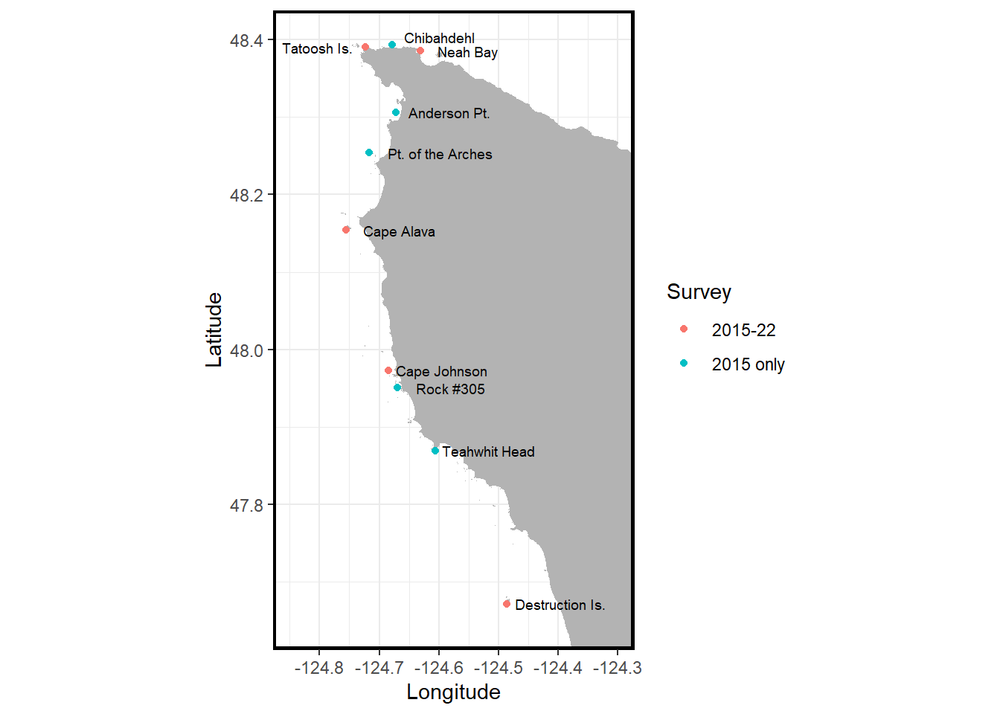
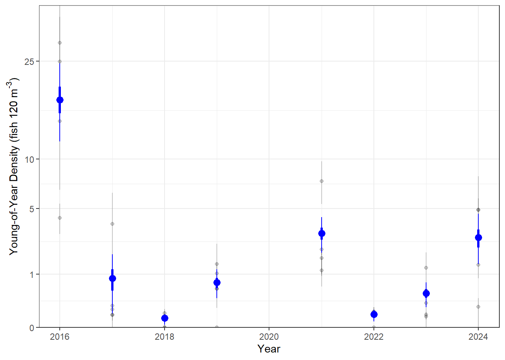

YOY analysis: Black and yellowtail rockfish complex
Data description
These are derived data products relevant to estimating recruitment of the black rockfish and yellowtail rockfish comlex stemming from NWFSC dive surveys in the Olympic Coast National Marine Sanctuary (OCNMS) conducted between 2015 and 2024. We estimate recruitment (young-of-year abundance) for the complex because it is difficult to distinguish small recruits for these species. Description of survey methods and aims are detailed in (Tolimieri et al. 2023) We provide a brief summary of methods relevant to fish surveys here.
Divers on SCUBA conducted in situ surveys to count fish at each site along benthic belt transects (30 m by 2 m) following slightly modified procedures described in Malone et al. (2022). Transects were conducted within or directly adjacent to canopy kelp beds (consisting of giant Macrocystis pyrifera or bull Nereocystis luetkeana kelps). From 2016 on, we surveyed at five (5) sites (Fig. 1), sampling at two (2) locations within each site separated by >100 m, and 2 depths within each location (5 and 10 m) Our goal was to complete six (6) replicate transects at each year-site-depth combination. In 2015 surveyed at 10 sites and conducted four (4) transects per site at 5 m depth (Fig. 1).
During each fish transect, we counted and estimated the size (total length to nearest cm) of all fishes >5 cm total length; the exception was rockfishes Sebastes spp., for which we estimated sizes of all individuals. Rockfishes \(\leq\) 10 cm were considered young of year. Divers also estimated horizontal visibility on each transect by determining the distance at which the lead diver could distinguish their buddy’s extended fingers. Transects with visibility less than 2 m were excluded from analyses.
As noted above, it is difficult to visually distinguish many rockfish species when they are small. Therefore, on our surveys, we categorized juvenile rockfishes into five (5) groups established in the literature (Johansson et al. 2018; Markel and Shurin 2020):
(1) Yellowtail and black (YTB) included both yellowtail (S. flavidus) and black (S. melanops) rockfishes.
(2) The copper/quillback/brown (CQB) group included copper (S. caurinus), quillback (S. maliger), and brown (S. auriculatus) rockfishes.
(3) Canary (S. pinniger) and
(4) Blue rockfish (S. mystinus) to species.
(5) Unidentified individuals were categorized as juvenile rockfishes.
The estimated recruitment trend for (1), the black rockfish and yellowtail rockfish complex, is presented here.
As a result of our 2-m visibility requirements, some transects were omitted from the analyses. The following tables (Table 2) show how the number fish transects with visibility >2 m were distributed across depth, site, and years (Table 1), as well as across sites and year (Table 2). 2015 includes only surveys conducted at 5-m depth; other years have data approximately evenly split between 5-m and 10-m depths.
| Year | Zone | Destruction Island | Cape Johnson | Cape Alava | Tatoosh Island | Neah Bay | Total |
|---|---|---|---|---|---|---|---|
| 2016 | 5 | 0 | 4 | 6 | 4 | 4 | 18 |
| 2016 | 10 | 3 | 6 | 6 | 4 | 6 | 25 |
| 2017 | 5 | 3 | 5 | 4 | 3 | 4 | 19 |
| 2017 | 10 | 0 | 4 | 6 | 4 | 4 | 18 |
| 2018 | 5 | 0 | 4 | 4 | 8 | 4 | 20 |
| 2018 | 10 | 0 | 3 | 8 | 7 | 8 | 26 |
| 2019 | 5 | 4 | 4 | 8 | 8 | 7 | 31 |
| 2019 | 10 | 8 | 7 | 8 | 6 | 8 | 37 |
| 2021 | 5 | 4 | 8 | 7 | 8 | 8 | 35 |
| 2021 | 10 | 3 | 8 | 7 | 6 | 8 | 32 |
| 2022 | 5 | 0 | 0 | 4 | 8 | 8 | 20 |
| 2022 | 10 | 0 | 0 | 7 | 6 | 5 | 18 |
| 2023 | 5 | 6 | 8 | 8 | 8 | 10 | 40 |
| 2023 | 10 | 4 | 9 | 8 | 8 | 7 | 36 |
| 2024 | 5 | 0 | 0 | 4 | 4 | 4 | 12 |
| 2024 | 10 | 3 | 0 | 3 | 9 | 9 | 24 |
| Site | 2016 | 2017 | 2018 | 2019 | 2021 | 2022 | 2023 | 2024 |
|---|---|---|---|---|---|---|---|---|
| Destruction Island | 3 | 3 | 0 | 12 | 7 | 0 | 10 | 3 |
| Cape Johnson | 10 | 9 | 7 | 11 | 16 | 0 | 17 | 0 |
| Cape Alava | 12 | 10 | 12 | 16 | 14 | 11 | 16 | 7 |
| Tatoosh Island | 8 | 7 | 15 | 14 | 14 | 14 | 16 | 13 |
| Neah Bay | 10 | 8 | 12 | 15 | 16 | 13 | 17 | 13 |
| TOTAL | 43 | 37 | 46 | 68 | 67 | 38 | 76 | 36 |
Recruitment: Young-of-year abundance trends
To calculate the average density of black/yellowtail rockfish complex in each year, we first calculate the mean density and standard error per site in each year. This approach means we are treating each transect as a i.i.d. sample of YOY density within each site and thus we ignore differences in abundance by depth zone.
From these site-year level means, we calculated a year-specific mean density by simulation. Specifically, for each year we independently drew a mean density for each site using a t-distribution with \(\mu\) (the estimated site mean), \(\sigma\) (the estimated site-specific standard error) and degrees of freedom, \(\tau\). So for the \(i^{th}\) realization, for site \(s\) in year \(y\) we have a predicted density, \(X_{isy}\)
\[\begin{align} & X_{isy} \sim T(\mu_{sy},\sigma_{sy},\tau_{sy}) \\ \end{align}\]and then the predicted density for a single realization in a given year is the mean among sites observed. We repeat the simulation 100,000 times to provide an estimated mean density and uncertainty for a given year (Fig. 2).
Nearly all small rockfish fall into the 4 to 7 cm length range and all are considered to have recruited from the plankton during the calender year of the survey. Therefore, we view the density of <10cm rockfish to be an indicator of recruitment for the black/yellowtail rockfish complex (Fig. 2).

References
Johansson, Mattias L, Marisa NC Litz, Richard D Brodeur, Tristan A Britt, Camilo A Vanegas, John R Hyde, and Michael A Banks. 2018. “Seasonal distribution of late larval and juvenile rockfish (Sebastes spp.) and associated environmental conditions off Oregon and Washington: new insights based on genetics.” Fishery Bulletin, no. 3-4: 266–91.
Malone, Daniel P, Kathryn Davis, Steve I Lonhart, Avrey Parsons-Field, Jennifer E Caselle, and Mark H Carr. 2022. “Large-scale, multidecade monitoring data from kelp forest ecosystems in California and Oregon (USA).” Wiley Online Library.
Markel, Russell W, and Jonathan B Shurin. 2020. “Contrasting effects of coastal upwelling on growth and recruitment of nearshore Pacific rockfishes (genus Sebastes).” Canadian Journal of Fisheries and Aquatic Sciences 77 (6): 950–62.
Tolimieri, Nick, Andrew O Shelton, Jameal F Samhouri, Chris J Harvey, Blake E Feist, Gregory D Williams, Kelly S Andrews, et al. 2023. “Changes in kelp forest communities off Washington, USA, during and after the 2014-2016 marine heatwave and sea star wasting syndrome.” Marine Ecology Progress Series 703: 47–66.